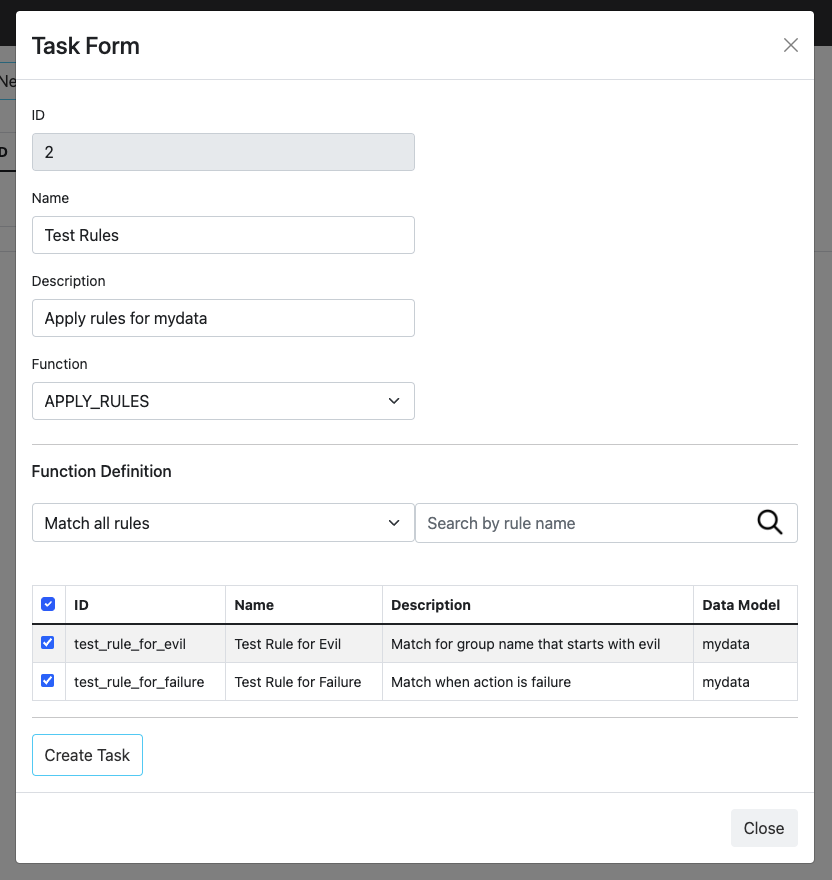
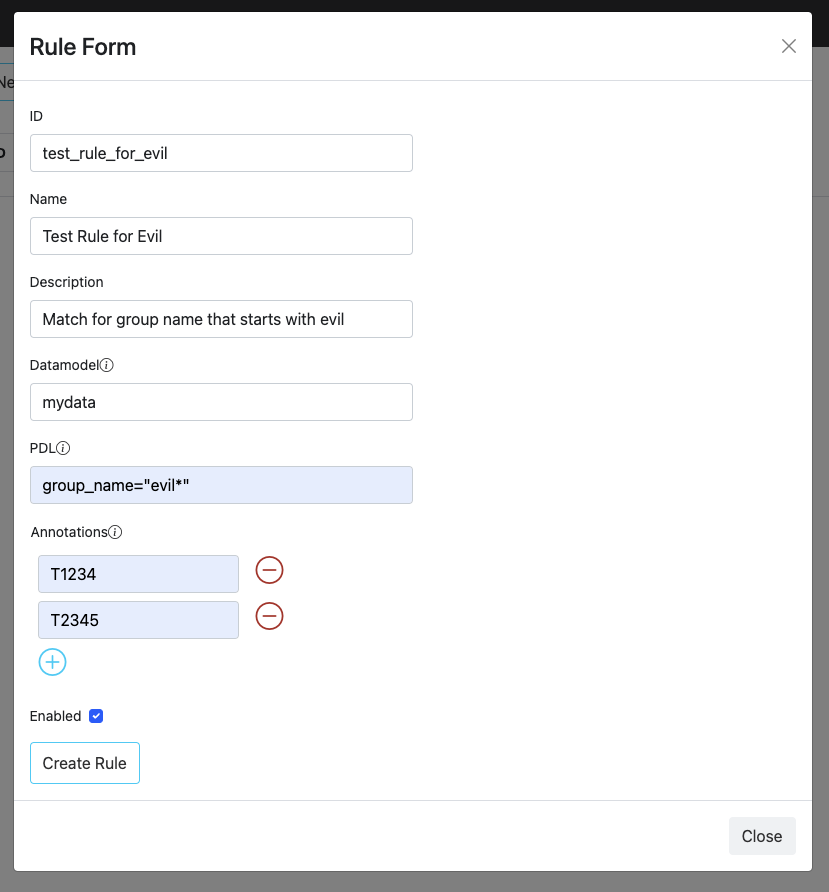
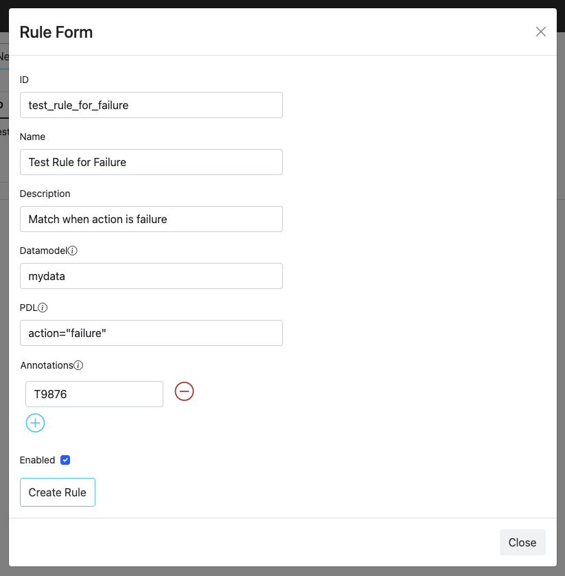
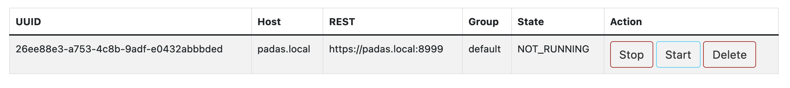

Quick Start
Use Padas to perform streaming event data transformations and apply specific rules to filter out sample data. This quick start guide assumes all components (Confluent Kafka and Padas) will be installed on the same machine. In production, it is recommended to separate out these components on different nodes/hosts.
Prerequisites
- Internet connectivity
- Review System Requirements
- Confluent Kafka must be installed and running (locally) as described in Quick Start for Confluent Platform.
- You should have at least Kafka and Zookeeper services up and running.
confluent local services status ... Kafka is [UP] ZooKeeper is [UP] ...
Overview of Quickstart
Below diagram shows what will be accomplished with this quick start guide.

We will play with some mock data such as the following. Our goal will be to transform sample event data and apply a set of rules to generate alerts.
Sample input:
{
"user": "user_1",
"group_id": 5,
"action": "success"
}
We will have a couple of simple rules that will trigger when group_name (soon to be enriched field) matches "evil*" or when action results in failure.
NOTE: For the purposes of demo, the goal is carried with multiple tasks, where as a simple FILTER function can be utilized as well.
Step 1: Download
-
Download the latest version of Padas Engine and UI components applicable to your platform.
wget https://padas.io/assets/downloads/padas-{{ current_version }}.tgz wget https://padas.io/assets/downloads/padas-ui-{{ current_version }}-linux-x64.tgz -
Use the
tarcommand to decompress the archive filetar -xzf padas-{{ current_version }}.tgz tar -xzf padas-ui-{{ current_version }}-linux-x64.tgz -
Once extracted, you should have
padasandpadas-uidirectories. By default, Padas Engine expects Kafka to be running onlocalhost. If that's not the case, editpadas/etc/padas.propertiesaccordingly.
At this stage, make sure you have Confluent Kafka is running as mentioned in prerequisites.
Step 2: Start Engine
-
Start engine node on the console. The script will ask you to accept the license agreement (enter
y)cd padas/bin/padas start-console PADAS SOFTWARE LICENSE AGREEMENT ... Displayed Padas Software License Agreement contents can also be found at https://padas.io/legal/eula.html OR in file /<YOUR INSTALL DIR>/padas/etc/license.txt Do you agree with this license? [y/n]: y INFO Verifying Kafka broker connection... INFO Successfully verified Kafka Cluster connection. INFO Successfully verified existence of all required topics. INFO Starting web interface at https://<HOSTNAME>:8999 ... @@@@@@@@@@@@@@@@@@@@@@@@@@@@@@@@@@@@@@@@@@@@@@@@@@@@@@@@@@@@@@@@@@@@@@@@@@@@ @@@@@@@@@@@@@@@@@@@@@@@@@@@@@@@@*@@@@@@@@@@@@@@@@@@@@@@@@@@@@@@@@@@@@@@@@@@@ @@@@@@@@@@@@@@@@@@@@@@@@@@@@@:**@@@@@@@@@@@@@@@@@@@@@@@@@@@@@@@@@@@@@@@@@@@@ @@@@@@@@@@@@@@@@@@@@@@@@@@@:****:@@@@@@@@@@@**:****@@@@@@@@@@@@@@@@@@@@@@@@@ @@@@@@@@@@@@@@@@@@@@@@@@@**********:::**********@@@@@@@@@@@@@@@@@@@@@@@@@@@@ @@@@@@@@@@@@@@@@@@@@@@@:***********************@@@@@@@@@@@@@@@@@@@@@@@@@@@@@ @@@@@@@@@@@@@@@@@@@@@@************************:@@@@@@@@@@@@@@@@@@@@@@@@@@@@@ @@@@@@@@@@@@@@@@@@@@@**************************@@@@@@@@@@@@@@@@@@@@@@@@@@@@@ @@@@@@@@@@@@@@@@@@@@*****************************@@@@@@@@@@@@@@@@@@@@@@@@@@@ @@@@@@@@@@@@@@@@@@@********************************&@@@@@@@@@@@@@@@@@@@@@@@@ @@@@@@@@@@@@@@@@@@#***********************************::@@@@@@@@@@@@@@@@@@@@ @@@@@@@@@@@@@@@@@@**:************************************@@@@@@@@@@@@@@@@@@@ @@@@@@@@@@@@@@@@@@@@@@@@******************************@@@@@@@@@@@@@@@@@@@@@@ @@@@@@@@@@@@@@&*@@@@@@@@@@*************************@@@@@@@@@@@@@@@@@@@@@@@@@ @@@@@:**********@@@@@@@@@@@***********************@@@@@@@@@@@@@@@@@@@@@@@@@@ @@@@***********:@@@@@@@@@@@@********************o@@@@@@@@@@@@@@@@@@@@@@@@@@@ @@@@***********@@@@@@@@@@@@@*******************:@@@@@@@@@@@@@@@@@@@@@@@@@@@@ **************o@@@@@@@@@@@@@*******************:@@@@@@@@@@@@@@@@@@@@@@@@@@@@ **************@@@@@@@@@@@@@********************:@@@@@@@@@@@@@@@@@@@@@@@@@@@@ @:::o:********@@@@@@@@@@@@:********************:@@@@@@@@@@@@@@@@@@@@@@@@@@@@ @@@@@@@o*******@@@@@@@@@@**************o@@@#****8@@@@@@@@@@@@@@@@@@@@@@@@@@@ @@@@@@@@*******:@@@@@@@:***********@@@@@@@@@@@@@@@@@@@@@@@@@@@@@@@@@@@@@@@@8 @@@@@@@@**********:@**************@@@@@@@@@@@@@@@@@@@@@@@@@@@@@@@@@@@@@@@@@* @@@@@@@:*****************************:8@@@@@@@@@@@@@@@@@@@@@@@@@@@@@@@@@@@@& @@@@@@:***********************************@@@@@@@@@@@@@@@@@@@@@@@@@@@@@@@@:@ @@@@@@o****************************************@@@@@@@@@@@@@@@@@@@@@@@@@:*@@ @@@@@@o********************************************:*@@@@@@@@@@@@@@@@@:**@@@ @@@@@@@@@******************************@::****************************:@@@@@ @@@@@@@@@@*@@:******#@@@@@@@@@*********@@@@@@@@8**:****************@@@@@@@@@ @@@@@@@@@*****@@*****:8@@@@@@@@@8*********@@@@@@@@@@@@@@@@@@@@@@@@@@@@@@@@@@ @@@@@@@@@*****@@@:******@@@@@@@@@@@@:*****@@@@@@@@@@@@@@@@@@@@@@@@@@@@@@@@@@ @@@@@@@@****&@@@@@@*****@@@@@@@@@@@@@@****@@@@@@@@@@@@@@@@@@@@@@@@@@@@@@@@@@ @@**@@@****@@@@@@@@#***#@@@@@@@@@@@@@@****@@@@@@@@@@@@@@@@@@@@@@@@@@@@@@@@@@ @@******:***@@@@@@@@***@@@@@@@@@@@@@@@****@@@@@@@@@@@@@@@@@@@@@@@@@@@@@@@@@@ @@@:&@@@@@@@@@@::@@*****:o@@@@@@@o***********@@@@@@@@@@@@@@@@@@@@@@@@@@@@@@@ @@@@@@@@@@@@@@@:*****8#@:*#@@@@@@8*@*8@@@@@@@@@@@@@@@@@@@@@@@@@@@@@@@@@@@@@@ @@@@@@@@@@@@@@@&@*@@@@@@@@@@@@@@@@@@@@@@@@@@@@@@@@@@@@@@@@@@@@@@@@@@@@@@@@@@ @@@@@@@@@@@@@@@@@@@@@@@@@@@@@@@@@@@@@@@@@@@@@@@@@@@@@@@@@@@@@@@@@@@@@@@@@@@@ ____ _ ____ _ ____ | _ \ / \ | _ \ / \ / ___| | |_) / _ \ | | | |/ _ \ \___ \ | __/ ___ \| |_| / ___ \ ___) | |_| /_/ \_\____/_/ \_\____/ INFO Starting App using Java 11.0.10 on <HOSTNAME> with PID 32965 (/<YOUR INSTALL DIR>/padas/libs/padas-0.0.1.jar started by selim in /<YOUR INSTALL DIR>/padas) INFO No active profile set, falling back to default profiles: default INFO Started App in 12.536 seconds (JVM running for 66.174)NOTE: Unless you created all required topics, you should receive a warning as following on the console. We'll create these topics on the next steps.
... WARN Unable to describe required topics for Padas. Please create these topics in order to run the engine. ...
Step 3: Start UI
-
Start UI component on the console. Default configuration connects to
localhostfor Padas Engine.cd padas-ui/bin/padas-ui start-console [HPM] Proxy created: /api -> https://<PADAS ENGINE HOST>:8999 -
Initialize User: Go to https://localhost:9000 and since this is the first time, click the link below and create an administrator user.

-
Login: After initial user creation you will be redrected to Login screen; Login with the newly created user credentials.
Step 4: Create Topics
In addition to required (Padas) topics we will create test_input and test_output topics for demo purposes. You can create these topics according to your preference (e.g. Confluent Control Center) and below steps simply provide one way of doing so.
-
Create Padas Topics: After initial login, from the left menu, click on Topics. For this demo, you can simply accept the defaults and click Create Topics button
IMPORTANT NOTE: If you created the required topics from Padas UI, you will need to restart the Padas Engine so that it can read from and write to these topics. Stop the running Padas Engine via
CTRL-C, and start it again. You'll need to logout/login from the UI as well.bin/padas start-console -
Create Test Topics: From the console, simply run the following commands to create
test_inputandtest_outputtest topics with defaults.kafka-topics --bootstrap-server localhost:9092 --create --topic "test_input" kafka-topics --bootstrap-server localhost:9092 --create --topic "test_output"
Step 5: Configure Padas
TLDR; Upload the configurations from the corresponding menus. Each of the views provide a way to bulk upload configurations from a file.
- For Tasks upload PadasQuickStartTasks.json
- For Pipelines upload PadasQuickStartPipelines.json
- For Rules upload PadasQuickStartRules.json
-
For Topologies upload PadasQuickStartTopologies.json

Following steps will guide you through how to manually create these configuration items instead of uploading.
-
Create Tasks: We will create 2 tasks. First one will simply perform some enrichment and add a new field
group_namebased on a condition. The second one will run all selected PDL rules. From Tasks menu, click New Task button and fill in the details.
-
Create Pipeline: Create a pipeline with the above tasks. From Pipelines menu, click New Pipeline button and fill in the details. Note that the output of a task becomes an input for the following task in the pipeline.

-
Create Rules: Create couple of rules for
mydatadata model. with the above tasks. From Rules menu, click New Rule button and fill in the details.

-
Create Topology: Create a topology with the above pipeline that reads from
test_inputtopic and writes totest_outputtopic. From Topologies menu, click New Topology button and fill in the details. -
Restart Node: Once a new topology is created we need to let Padas Engine know about it by restarting the node. You can do this from the console (
CTRL-Cand start, or stop/start the service, etc.) or you can also do this from the UI from Nodes menu, click Start button and you should see the state change toRUNNINGfor this node.
Step 6: Test & Play
-
Generate Data: Let's generate a few sample event with a simple JSON message. Note that the last 2 events will match the rules specified above.
echo '{"user": "user_1","group_id": 5,"action": "success"}' | kafka-console-producer --bootstrap-server localhost:9092 --topic test_input echo '{"user": "user_1","group_id": 1,"action": "success"}' | kafka-console-producer --bootstrap-server localhost:9092 --topic test_input echo '{"user": "user_1","group_id": 1,"action": "failure"}' | kafka-console-producer --bootstrap-server localhost:9092 --topic test_input -
View output: Once the sample event is ingested, rules for matching datamodels in real-time and populate
padas_alertstopic with matching event and alert information. You can simply view this alert with the following command:kafka-console-consumer --bootstrap-server localhost:9092 --topic test_output --from-beginning | jqOutput will be similar to the following, this example output is from the last input from above. Note the use of
jqabove for pretty display of JSON data.{ "user": "user_1", "group_id": 1, "action": "failure", "group_name": "evil group", "padasRule": { "id": "test_rule_for_evil", "name": "Test Rule for Evil", "description": "Match for group name that starts with evil", "pdl": "group_name=\"evil*\"", "datamodel": "mydata", "annotations": [ "T1234", "T2345" ] } } { "user": "user_1", "group_id": 1, "action": "failure", "group_name": "evil group", "padasRule": { "id": "test_rule_for_failure", "name": "Test Rule for Failure", "description": "Match when action is failure", "pdl": "action=\"failure\"", "datamodel": "mydata", "annotations": [ "T9876" ] } }
Next Steps
- Install in production.
- Utilize PADAS with out-of-the-box PadasRules_sample.json
- Integrations with ingest pipelines (Sample Sysmon Config with Winlogbeat).